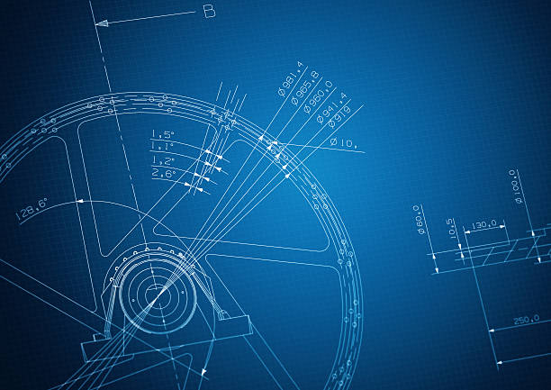

Machine Design is a specialized field within mechanical engineering that focuses on creating and analyzing mechanical components and systems that are both functional and efficient. The core of machine design involves understanding the principles of materials, forces, and motion to design machines that are reliable, safe, and cost-effective. Students in this field learn about the design and analysis of various machine elements like gears, shafts, bearings, springs, and couplings, along with their applications in industries such as automotive, aerospace, robotics, and manufacturing. Emphasis is placed on understanding mechanical properties, load analysis, and failure mechanisms to ensure the longevity and performance of the designed systems.
Machine design also includes the use of advanced software tools for computer-aided design (CAD) and finite element analysis (FEA) to simulate and optimize machine components. The design process incorporates considerations of strength, fatigue, heat treatment, lubrication, and maintenance to ensure machines operate efficiently in real-world conditions. Students also explore the use of materials science, manufacturing processes, and production techniques to create designs that are both functional and economically viable. As industries increasingly demand precision and innovation, machine design professionals play a key role in developing products and systems that drive technological advancements and efficiency in manufacturing and production.

Machine Design(M.TECH)
Behind every great invention, there is an engineer who dared to imagine the impossible."
Machine Design Lab Facility
The Machine Design lab facilities at our college are equipped with modern tools and software to support practical learning in the design and analysis of mechanical components. Students gain hands-on experience with Computer-Aided Design (CAD) software like AutoCAD and SolidWorks, allowing them to create and visualize 3D models of machine parts and assemblies
Additionally, the lab features equipment for testing machine components such as gears, shafts, and bearings to study their performance under real-world conditions. Students can conduct experiments related to the strength of materials, fatigue testing, and vibration analysis.
Additionally, the lab features equipment for testing machine components such as gears, shafts, and bearings to study their performance under real-world conditions. Students can conduct experiments related to the strength of materials, fatigue testing, and vibration analysis.